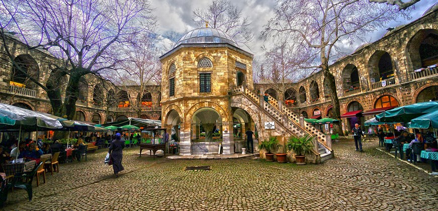

Five Famous Places in Bursa
Green Tomb
Ornate, octagonal shaped tomb of marble & green tile built in 1421 for an Ottoman sultan.
Cumalıkızık
Cumalıkızık is a neighbourhood in the municipality and district of Yıldırım
Koza Han
Historic, multilevel silk market known for its Ottoman-era architecture.
Uludag Ski-center
It is a winter time post snowing onslaught. Coldest part in Bursa..
Panorama 1236 Bursa Conquest Museum

Futuristic dome with a 360-degree image depicting the 14th-century Ottoman conquest of the city.